비서-3급 (2016-11-20 기출문제)
1과목: 비서실무
1. 비서직무에 대한 설명 중 적절하지 않은 것은?
- 비서는 업무와 관련하여 얻게 되는 상사나 조직, 또는 고객에 대한 정보의 기밀을 보장하고 업무 외의 목적으로 기밀 정보를 사용하지 않는다.
- 비서는 업무 수행 시 경비 절감과 자원절약, 환경보존을 위해 노력해야 한다.
- 비서는 전문 지식과 사무능력을 보유하고 업무를 효율적으로 수행함으로써 상사와 조직의 이익을 증진시킨다.
- 비서는 모든 일에 솔선하여 주도권을 가지고 업무에 대한 적극성을 보이도록 한다.
(정답률: 66%)

2. 상사는 이전의 비서가 조직 내에서 인간관계 문제로 퇴사를 하였으므로 새로 채용된 김영숙 비서에게 가능하면 회사에서 행동을 조심할 것을 지시하였다. 김 비서의 인간관계 자세로 가장 바람직한 것은?
- 비서는 기밀유지라는 직무 특성상 가능한 조직 내의 사람들과는 어울리지 않는다.
- 조직 내에서 업무 협조를 위해 한 두명과는 긴밀한 관계를 유지하면서 정보를 공유하였다.
- 여직원 모임에 가입하여 필요한 정보를 공유하고 상사에게 건의사항 등을 메모하여 정리해 두었다.
- 상사를 대신하여 부서장들과 안부 연락을 자주하여 상사에 대한 좋은 인상을 주기 위해 노력하였다.
(정답률: 74%)
3. 조상무의 비서는 부사장과 직접 통화하기를 원하는 조상무를 위해 전화를 연결하였다. 다음 중 가장 올바른 것은?
- 부사장과 연결이 되면 “안녕하십니까? 조상무님 비서입니다. 지금 상무님께서 통화를 원하십니다. 잠시만 기다려 주시겠습니까?”하고 상무와 전화연결을 시킨다.
- 부사장 비서와 통화해서 연결할 때 조상무가 부사장보다 먼저 전화상에서 기다리도록 한다.
- 부사장 휴대폰으로 직접 연결하여 신호음이 들릴 때 조상무와 연결시키도록 한다.
- 부사장실에 전화하여 부사장의 재실여부를 확인 후 조상무가 직접 부사장실로 전화하도록 한다.
(정답률: 77%)
4. 다음 중 결혼 축의금 봉투에 쓸 수 없는 한자는?
- 祝榮轉
- 祝儀
- 祝結婚
- 祝華婚
(정답률: 58%)
5. 상사인 정문식 전무는 중요한 프로젝트 건으로 집무실에서 회의중이며 회의 중에는 전화 연결을 원하지 않는다. 회의 중에 정문식 전무의 상사인 대표이사 사장이 전화를 하여 정 전무와 통화하기를 원하신다. 비서의 전화응대방법으로 가장 적절한 것은?
- 대표이사에게 상사가 회의 중이라고 밝히고 상사에게 메모를 넣겠다고 말한다.
- 대표이사에게 정 전무는 회의 중에 전화연결을 원하지 않아서 전화연결이 곤란하다고 말한다.
- 대표이사에게 정 전무가 현재 중요한 프로젝트 건으로 회의중이라 통화가 어렵다고 공손히 말한다.
- 대표이사에게 전화가 왔으므로 바로 연결해 드린다.
(정답률: 64%)
6. 다음 중 내방객을 안내하는 일반적인 방법으로 가장 적절하지 않은 것은?
- 손님 접대 시 차를 내는 순서는 손님의 앉은 순서대로 먼저 드리고 나중에 상사를 드린다.
- 승무원이 없는 엘리베이터의 경우 비서가 먼저 타서 문이 닫히지 않도록 열림 버튼을 누르고 있는다.
- 접견실의 문이 안으로 열릴 경우 비서가 먼저 안으로 들어간 후 뒤에 손님을 안내하도록 한다.
- 접견실로 안내할 경우 “이쪽입니다.”하고 안쪽이나 창가쪽으로 안내한다.
(정답률: 55%)
7. 다음 중 직장 내에서 비서의 인간관계에 대한 내용으로 가장 적절하지 않은 것은?
- 비서는 상사의 성격과 장단점을 미리 파악하여 장점은 대외적으로 드러나도록 하고 약점은 보완될 수 있도록 노력한다.
- 선임비서가 해 왔던 업무방식이 자신의 생각과 다르더라도 종래의 방법을 따르다가 자신에게 책임이 주어지면 단계적으로 개선해 나간다.
- 입사동기라도 상사의 직위를 존중하여 대우를 해 주는 것이 좋다.
- 직장 동료 사이의 금전관계는 바람직하지 않으므로 피하는 것이 좋다.
(정답률: 49%)
8. 비서로서 직장 내 동료와의 관계를 원활하게 유지하기 위한 방법으로 가장 적절치 않은 것은?
- 직장 내 동아리에 가입하여 폭넓은 인간관계를 형성한다.
- 필요에 따라서는 동료들의 요구사항이나 고충을 상부에 조언함으로써 중재자 역할을 한다.
- 노동조합에 가입하고자 할 때에는 반드시 상사와 상의하여 결정한다.
- 명확한 업무의 구분과 보안을 위해서 동료 직원의 업무에 관여하지 않는다.
(정답률: 64%)
9. 신입비서가 사용하는 화법으로 가장 적절한 것은?
- “김과장님! 수고하셨습니다.”
- “사장님! 김 팀장님이 물어보실 것이 있다고 하십니다.”
- “부장님! 이분은 저희 회사 홍길동부장님이십니다.”
- “부장님! 사장님께서 사장님실로 오라고 하십니다.”
(정답률: 66%)
10. 일정을 기입하는 요령으로 옳지 않은 것은?
- 상사와 관련된 일정 기입은 상사의 의견을 들어서 정한다.
- 일정표는 가능한 상세하게 기입하고 기억해 둔다.
- 최초의 연간 예정은 비서의 종합 일정표에 옮긴다.
- 일정표는 여러 곳에 나누어 기록하고 개인적인 일정도 함께 기록한다.
(정답률: 82%)
11. 김영숙 비서는 자신이 자리를 비우더라도 다른 직원이 비서 업무를 수행할 수 있도록 업무 매뉴얼을 만들기로 했다. 업무 매뉴얼과 관련된 내용으로 바람직하지 않은 것은?
- 업무 매뉴얼에는 공식적인 비서 업무 뿐 아니라 상사의 개인 신상에 관한 내용도 포함된다.
- 업무 절차에 따라 주요 업무와 지원 업무로 구분하여 업무 순서를 정리해 둔다.
- 업무 매뉴얼에는 매일 일정하게 처리하는 업무의 종류와 방식, 서류 및 비품의 위치, 전화번호 등이 포함된다.
- 비서의 업무를 종류별로 구분하여 나열한 후 각 업무 처리 순서와 방법을 정리해 둔다.
(정답률: 78%)
12. 다음 상황을 읽고 한 비서의 업무 처리 방법으로 가장 적절치 못한 것은?
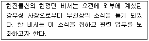
- 회사 임원 및 비서들에게 사내 메일을 통해 부고장을 보낸다.
- 주요 신문사에 연락하여 부음기사를 내도록 한다.
- 상사의 친구와 지인들에게 전화나 팩스로 부음을 알린다.
- 전화를 받고 바로 장례식장으로 가서 조문을 하고 장례일정을 돕는다.
(정답률: 65%)
13. 동아은행 박소영 비서는 다음과 같은 내용으로 회의를 준비하고 있다. 다음의 회의에 적합한 테이블 좌석배치 형태는?
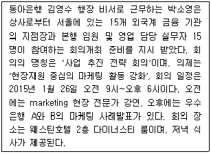
- 원탁형 또는 네모형
- ㄷ자형, V자형, U자형
- ㅁ자형과 타원형
- 교실형
(정답률: 57%)
14. 다음은 오늘 상사 일정이다. 상사의 일정관리를 수행하는 비서의 업무로 가장 적절하지 않은 것은?
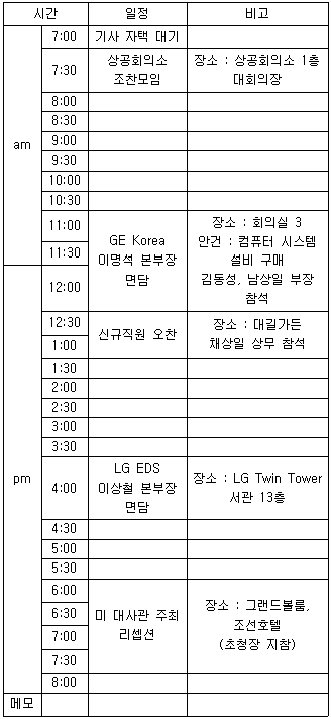
- 사무실에서 LG Twin Tower까지의 이동경로와 이동시간을 확인한 후 운전기사를 대기시킨다.
- 상공회의소 조찬모임 관련 자료는 아침 일찍 기사에게 전달하여 잊지 않도록 한다.
- 오찬장소로 이동할 때는 채상일 상무에게 상사를 모시고 갈 것을 부탁한다.
- 리셉션 초청장은 상사가 호텔로 출발하기 전에 상사에게 전달한다.
(정답률: 50%)
15. 다음은 보고의 원칙과 방법에 대한 설명이다. 가장 적절하지 않은 것은?
- 상사가 궁금해 하는 것을 먼저 보고해야 하는데, 이는 상사입장에서 나에게 질문을 해 봄으로써 파악이 가능하다.
- 최대한 많은 내용의 숫자를 포함해서 보고함으로써 상사가 의사결정을 효과적으로 할 수 있도록 보좌한다.
- 보고는 결론부터 말하되 내용이 긴 경우 결론·경과나 이유·소견 등의 순서로 말한다.
- 사실 그대로 보고해야 하며, 개인적인 추측이나 의견, 감정이 아닌 객관적인 사실을 분명하게 보고한다.
(정답률: 59%)
16. 다음의 보기가 설명하는 회의 형식은?
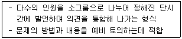
- 버즈세션
- 심포지움
- 패널
- 포럼
(정답률: 70%)
17. 상사의 해외출장을 위해 김비서는 호텔을 예약하면서 호텔로 다음과 같이 이메일을 보냈다. 다음 중 잘못된 설명은?
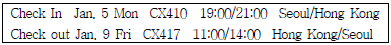
- 호텔에 late arrival notice를 해 둔다.
- CX410, CX417은 비행기 편명이다.
- 호텔 체크아웃 시간은 1월9일 11시부터 14시 사이에 하면된다.
- 비서는 상사의 홍콩출장을 위해 호텔에 4박을 예약하면 된다.
(정답률: 71%)
18. 상사를 보좌하는 비서의 업무에 대한 설명으로 적절하지 않은 것은?
- 비서는 상사의 인적 사항에 대한 모든 내용을 상사의 개인 파일에 정리해 두며, 상사의 개인 파일은 기밀 유지를 위해 남들이 잘 알지 못하는 곳에 보관하거나 암호화하여 보관하도록 한다.
- 상사의 이력에 관한 사항을 대내·외적인 필요에 의해 공개하거나 제출할 경우 비서는 상사의 이력서 내용 중에서 외부에 공개할 내용을 선별하여 작성 후 상사에게 검토를 받은 후에 제공할 수 있다.
- 효과적인 인적 네트워크 명단을 작성하여 관리하고, 이러한 명부가 존재한다는 사실에 대해서는 기밀을 유지하고 공개되지 않도록 주의하며 항상 최근의 정확한 정보를 갖추도록 한다.
- 모임에 관한 내용이 변경되거나 개선 사항 등을 업데이트 할 때, 중요 사항인 경우 이전 기록을 삭제하고 수정된 내용으로 바꾸어 기재한다.
(정답률: 74%)
19. 갑작스런 일정의 변경으로 11월 14일까지 하루 더 출장지에 머무르게 되었다. 아래의 출장일정표를 보고 이에 따른 비서의 업무 처리로 가장 적절치 않은 것은?
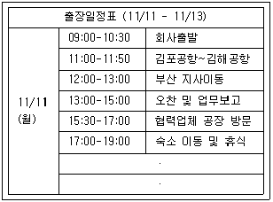
- 호텔숙박을 하루 더 연장하도록 조치를 취한다.
- 항공일정을 확인하여 변경한다.
- 추가된 하루 일정에 대한 스케줄을 정리하여 상사에게 보낸다.
- 변경 전 출장 일정 다음날 계획되어 있던 면담 일정을 변경하고 상사에게 보고 한다.
(정답률: 69%)
20. 다음은 지시를 받는 요령이다. 지시받는 태도로 가장 바람직한 것은?
- 지시를 받을 때 상사가 바쁜 상황이라도 이해하지 못한 부분은 그 자리에서 질문하여 확실히 이해하도록 한다.
- 상사가 급히 호출할 때는 메모 준비가 되어 있지 않더라도 바로 집무실에 입실하여 지시 내용을 외우도록 한다.
- 지시를 받은 업무를 바로 시작하기 어렵더라도 일단 지시 내용을 수령 후 혼자 해결하도록 한다.
- 간단한 지시 내용의 경우에는 신속한 업무 수행을 위하여 복창 없이 바로 퇴실하여 업무 수행을 한다.
(정답률: 59%)
2과목: 사무영어
21. 다음 항공권에 대한 설명으로 올바르지 않은 것은?
- Passenger Name : 승객성명
- Booking Reference : 예약번호
- Flight Time : 비행시간
- Not Valid After : 유효기간 시작일
(정답률: 83%)
22. 다음의 영문 부서명과 한글 뜻이 연결된 것 중 가장 적절하지 않은 것은?
- Customer Service - 고객관리부
- General Affairs Dept. - 총무부
- Headquarters - 지사
- Personnel Dept. - 인사부
(정답률: 74%)
23. 다음 대화의 빈칸에 들어갈 가장 적절한 동사의 형태는?
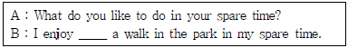
- taking
- to take
- takes
- took
(정답률: 77%)
24. 다음의 단어들 중에서 철자가 잘못된 것은?
- executive
- corespondance
- arrival
- supervisor
(정답률: 71%)
25. 다음 편지의 빈칸에 들어갈 표현으로 가장 적절한 것은?
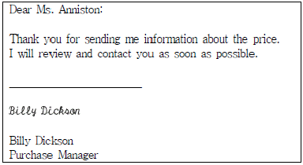
- yours sincerely.
- Enclosure
- Sincerely,
- Postscript
(정답률: 60%)
26. 다음 밑줄 친 ⓐ∼ⓓ에 대한 설명 중 옳지 않은 것은?
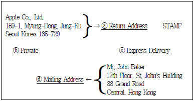
- ⓐ Return Address : 발신자 주소
- ⓑ Private : 친전
- ⓒ Express Delivery : 등기
- ⓓ Mailing Address : 수신자 주소
(정답률: 77%)
27. 다음 메시지의 작성 목적으로 가장 올바른 것은?
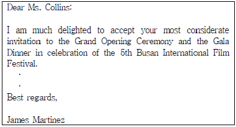
- 행사 안내 서신
- 초청을 위한 서신
- 초청 수락을 위한 회신
- 조치사항에 대한 확인 서신
(정답률: 75%)
28. 아래의 전화메모를 작성한 사람은 누구인가?
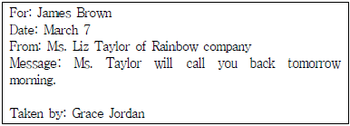
- James Brown
- Grace Jordan
- Liz Taylor
- A secretary of Liz Taylor
(정답률: 75%)
29. 다음 비즈니스 레터의 목적은 무엇인가?
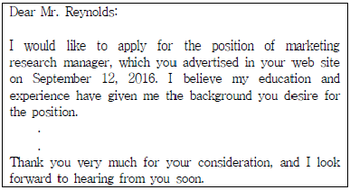
- 동료를 소개하기 위해서
- 회사에 지원하기 위해서
- 마케팅 관련 정보를 요청하기 위해서
- 인터뷰에 대한 감사를 표하기 위해서
(정답률: 64%)
30. 다음 대화 내용의 사실과 다른 것은?
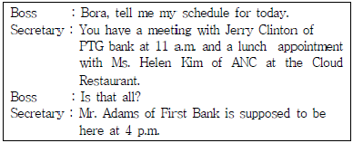
- Boss는 오늘 세 사람을 만나기로 되어 있다.
- Boss는 Mr. Adams의 사무실에 4시까지 가야 한다.
- Boss는 Jerry Clinton과 오전에 회의를 가질 것이다.
- Boss는 Cloud 식당에서 점심식사를 할 것이다.
(정답률: 66%)
31. 아래 대화의 빈칸에 들어갈 가장 적절한 단어는?
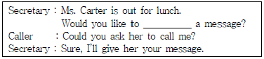
- taking
- leaving
- take
- leave
(정답률: 62%)
32. 다음의 영어 표현을 한국어로 번역했을 때 의미가 올바르지 않은 것은?
- We have fewer competitors. - 우리는 경쟁자가 많이 있습니다.
- We invested $100 thousand in new facilities. - 우리는 새로운 설비에 10만 달러를 투자했습니다.
- I won contracts in UK for $100 million. - 저는 영국에서 1억 달러의 계약을 체결했습니다.
- What were your sales like last year? - 지난해 매출은 어땠습니까?
(정답률: 70%)
33. 다음 빈칸에 들어갈 내용으로 가장 적절한 것은?
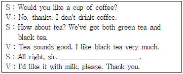
- How would you like it?
- Could you please wait for a minutes?
- Please make yourself comfortable.
- Can I get you another drink?
(정답률: 76%)
34. 다음의 대화 내용과 가장 거리가 먼 것은?
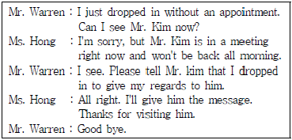
- Ms. Hong will give Mr. Warren's message to her boss.
- Mr. Warren will meet with Mr. Kim in the morning.
- Mr. Kim is out of the office all morning.
- Mr. Warren and Mr. Kim have known each other.
(정답률: 65%)
35. 다음 편지의 수신인 주소를 바르게 나열한 것을 고르시오.
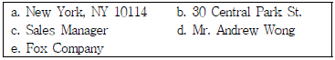
- d-c-e-b-a
- d-c-e-a-b
- a-b-e-c-d
- a-b-d-c-e
(정답률: 53%)
36. 다음 대화를 읽고 상황을 설명한 것으로 가장 적절한 것은?
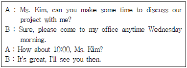
- 약속 일정 취소하기
- 약속 일정 변경하기
- 약속 일정 확인하기
- 약속 일정 정하기
(정답률: 83%)
37. 다음의 대화문 빈칸에 들어갈 표현으로 적절하지 않은 것은?
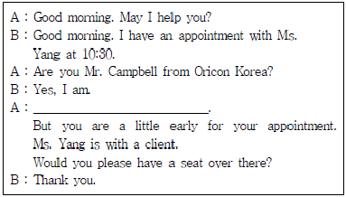
- We have been expecting you
- We have been waiting for you
- We have been awaiting for you
- We have been awaiting you
(정답률: 67%)
38. 다음 전화대화의 내용흐름상 빈칸에 가장 알맞은 것은?
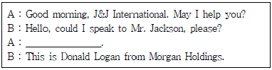
- May I ask what this is reference to?
- Would you like to leave a message?
- Could you hold on for a moment?
- May I ask who is calling?
(정답률: 64%)
39. 다음 대화에서 빈칸에 들어갈 표현으로 가장 적절한 것은?
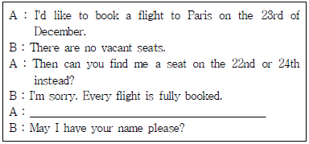
- Let me check if there are any seats available.
- We have two flights available on that day.
- Can you place my name on the waiting list, then?
- Can I have your passport and a credit card?
(정답률: 76%)
40. 다음 대화에 나오는 영업부서의 위치에 대한 설명으로 가장 적절한 것은?
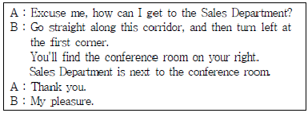
- 영업부서를 가려면 복도를 따라 가다 우측으로 돈다.
- 영업부서는 회의실 맞은편에 있다.
- 영업부서를 가려면 먼저 복도를 따라가다 첫 번째 모퉁이에서 왼쪽으로 돌면 된다.
- 영업부서와 회의실은 다른 층에 있다.
(정답률: 68%)
3과목: 사무정보관리
41. 우편물을 매월 100통 이상 다량 발송하는 홍보회사에 다니는 A씨는 우편요금을 월 1회 일괄적으로 결제하고자 한다. A씨가 사용하기에 가장 적합한 것은?
- 요금후납
- 통화등기
- 그린우편
- 요금별납
(정답률: 69%)
42. 다음 중 문서 접수 대장에 기입할 필요성이 가장 낮은 항목은?
- 접수 일련번호
- 접수 일자
- 발신기관명
- 발신기관 전화번호
(정답률: 65%)
43. 다음 중 공문서 작성에 관한 설명으로 가장 옳지 않은 것은?
- 수신자를 기입할 때 수신기관이 두 군데 이상인 경우 수신자란에 수신자 참조를 쓰고 발신명의 위에 수신처란을 따로 만들어서 수신자명 또는 수신자 기호를 표시한다.
- 문서의 내용이 복잡하여 2개 이상의 내용으로 구분하여 작성할 필요가 있는 경우에는 반드시 항목을 구분하여 작성한다.
- 경유기관이 있는 경우에는 경유의 표시는 “이 문서는 경유기관의 장은 000이고 최종 수신기관의 장은 000입니다.”라고 기입한다.
- 시행처리과와 일련번호를 기입할 때에는 처리과명을 기재하고 일련번호는 연도별 일련번호를 기재한다.
(정답률: 62%)
44. 다음 중 공문서를 발송하는 절차가 가장 적절하지 못한 것은?
- 외부로 발송되는 공문서는 기안문이다.
- 내용이 중요한 문서는 인편, 등기우편 등 기타 발송 사실을 증명할 수 있는 방법을 사용한다.
- 문서는 발송할 때에는 발신기관장의 직인을 날인한 후 발송하여야 한다.
- 문서를 발송할 때는 문서를 분실, 훼손, 도난당하지 않도록 적절한 조치를 강구해야 한다.
(정답률: 66%)
45. 김비서는 상사를 대신하여 작성한 초안을 상사의 지시에 따라 수정하려고 한다. 다음 교정 기호에 대한 설명 중 가장 올바른 것은?
- : 삭제하기
- : 붙이기
- : 줄잇기
- : 내어쓰기
(정답률: 83%)
46. 김비서는 거래처에서 보냈다고 하는 이메일을 받지 못하였다. 거래처 김대리는 분명 발송을 여러 차례 하였다고 한다. 아래 지문 중에 고려할 수 없는 상황은?
- 김비서의 메일에 저장용량이 부족하여 수신하지 못하였다.
- 메일 주소에 오류가 있어서 수신하지 못하였다.
- 스팸메일로 처리되어 수신하지 못하였다.
- 문서처리과에서 전달하지 않아 수신하지 못하였다.
(정답률: 68%)
47. 아래의 설명에 해당하는 결재방식은 무엇인가?
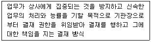
- 선결(先決)
- 전결(專決)
- 대결(代決)
- 후결(後決)
(정답률: 78%)
48. 다음 전자우편의 기능에 관한 설명 중 가장 적절하지 않은 것은?
- 동시 받기 지정(동보)을 통해 같은 내용의 문서를 여러 사람에게 동시에 보낼 수 있다.
- '전달'기능을 이용하면 첨부메일을 포함하여 받은 전자우편을 다른 수신자에게 보낼 수 있다.
- '참조'란 본래의 수신인 이외 다른 수신인을 지정하여 발신하는 것이며, 본 수신인에게는 다른 수신인의 전자우편 주소가 표시되지 않는다.
- '첨부파일'의 용량이 클 경우 zip파일로 압축하면 용량이 줄어든다.
(정답률: 71%)
49. 다음 사무자동화 기기 중 성격이 다른 하나를 고르시오.
- USB 메모리
- 외장하드
- 스캐너
- Micro SD
(정답률: 76%)
50. 페이스북, 트위터, 인스타그램, 카카오스토리 등과 같이 사용자간의 자유로운 의사소통과 정보 공유, 그리고 인맥 확대 등을 통해 사회적 관계를 생성하고 강화시켜주는 온라인 플랫폼을 의미하는 단어는 무엇인가?
- 스마트폰
- 소셜 네트워크 서비스
- 무선인터넷 서비스
- 전자 게시판
(정답률: 85%)
51. 이것은 흑백 격자무늬 패턴으로 정보를 나타내는 매트릭스 형식의 바코드로, 기존 바코드가 용량 제한에 따라 가격과 상품명 등 한정된 정보만 담는 데 비해 이것은 넉넉한 용량을 강점으로 3차원적인 다양한 정보를 담을 수 있다. 이것에 가장 적합한 용어는?
- 보코드
- EPC코드
- RFID
- QR코드
(정답률: 80%)
52. 다음 중 신문 스크랩에 관한 업무처리 방법이 가장 올바르지 않는 경우는?
- 상사가 필요로 하는 기사 중심으로 스크랩했다.
- 중요한 헤드라인 중심으로 훑어보면서 기사를 찾아 스크랩한다.
- NOD 서비스를 이용하여 미리 설정한 주제에 관련한 기사를 받아볼 수 있다.
- 스크랩한 기사는 주제별로 정리해서 1년 단위로 보관하였다.
(정답률: 65%)
53. 다음 사무기기 중 정보를 처리하는 기능이 없이 정보를 저장하는 매체에 속하는 것은?
- 데스크톱 PC
- PDA
- 스마트폰
- 외장하드
(정답률: 80%)
54. ( )안에 공통적으로 들어갈 적당한 단어로 가장 적절한 것은?
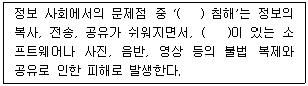
- 저작권
- 초상권
- 특허권
- 사생활보호권
(정답률: 82%)
55. 다음 중 비서실에서 상사에게 필요한 정보를 얻기 위한 가장 올바른 신문 구독 및 자료 정리의 방법은?
- 신문은 한 가지만 구독하여 중복되지 않은 꾸준한 정보를 얻는다.
- 일간지와 경제지 등 여러 종류의 신문을 구독하여 다양한 시선으로 사건을 파악한다.
- 매일 많은 시간을 투자하여 자세한 내용을 파악한다.
- 회사에 관한 모든 기사를 스크랩해 두어 다음에 활용할 수 있게 한다.
(정답률: 77%)
56. 허비서는 정보수집 및 관리와 관련한 업무를 처리하고 있다. 다음 중 가장 부적절하게 설명된 것은?
- 수집된 정보가 훼손되지 않도록 원자료를 모두 상사에게 드린다.
- 정보는 필요에 따라 분석하거나 가공하여 활용할 수 있다.
- 수치는 도표화하거나 그래프화 하여 자료를 요약할 수 있다.
- 필요한 정보 획득에 용이하도록 평소에 정보 출처에 관심을 가져둘 필요가 있다.
(정답률: 69%)
57. 다음 괄호 안에 들어가야 할 가장 적당한 용어는?
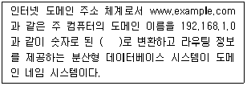
- IP 어드레스
- URL 주소
- TCP/IP
- MAC 주소
(정답률: 67%)
58. 비서는 상사와 기업은 물론 자신의 정보를 보호하기 위해 노력하여야 한다. 다음 중 가장 올바르지 않은 것은?
- 비밀번호는 주기적으로 변경하여 관리한다.
- 정전을 대비하여 비상전원공급장치를 마련한다.
- 컴퓨터 로그인 암호를 설정하여 관리한다.
- PC 폐기 시에는 하드디스크의 데이터를 외장하드로 복사한 후 버린다.
(정답률: 75%)
59. 장거리나 해외에 근무하고 있는 사람들과 화면을 통해 얼굴을 보며 회의를 진행할 수 있도록 하는 사무정보기기로서 가장 적절한 것은?
- 테더링서비스
- 화상회의시스템
- 키폰
- 이메일
(정답률: 86%)
60. 최비서는 스마트한 업무 환경을 위해 스마트 모바일 기기를 활용하고 있다. 최비서의 행동 중 가장 적절하지 않은 것은?
- 출장지에서 스마트폰으로 상사에게 이메일을 통해 업무 보고를 했다.
- 컴퓨터와 스마트폰에 일정관리 프로그램을 연동해 상사의 일정을 관리했다.
- 스마트폰 애플리케이션은 업데이트를 자주 하면 데이터가 지워질 수 있으므로 자주 업데이트는 하지 않는다.
- 클라우드 서비스를 이용해 컴퓨터와 스마트폰에서 문서 파일을 편집, 저장, 공유했다.
(정답률: 81%)
"비서는 모든 일에 솔선하여 주도권을 가지고 업무에 대한 적극성을 보이도록 한다."는 비서의 역할과 책임을 잘 설명한 것입니다. 비서는 업무를 주도적으로 처리하고, 적극적으로 업무를 수행하여 조직의 성과를 높이는 역할을 합니다.
따라서, 비서는 업무와 관련하여 얻게 되는 상사나 조직, 또는 고객에 대한 정보의 기밀을 보장하고 업무 외의 목적으로 기밀 정보를 사용하지 않는다. 또한, 비서는 전문 지식과 사무능력을 보유하고 업무를 효율적으로 수행함으로써 상사와 조직의 이익을 증진시킨다는 설명도 적절합니다.